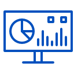
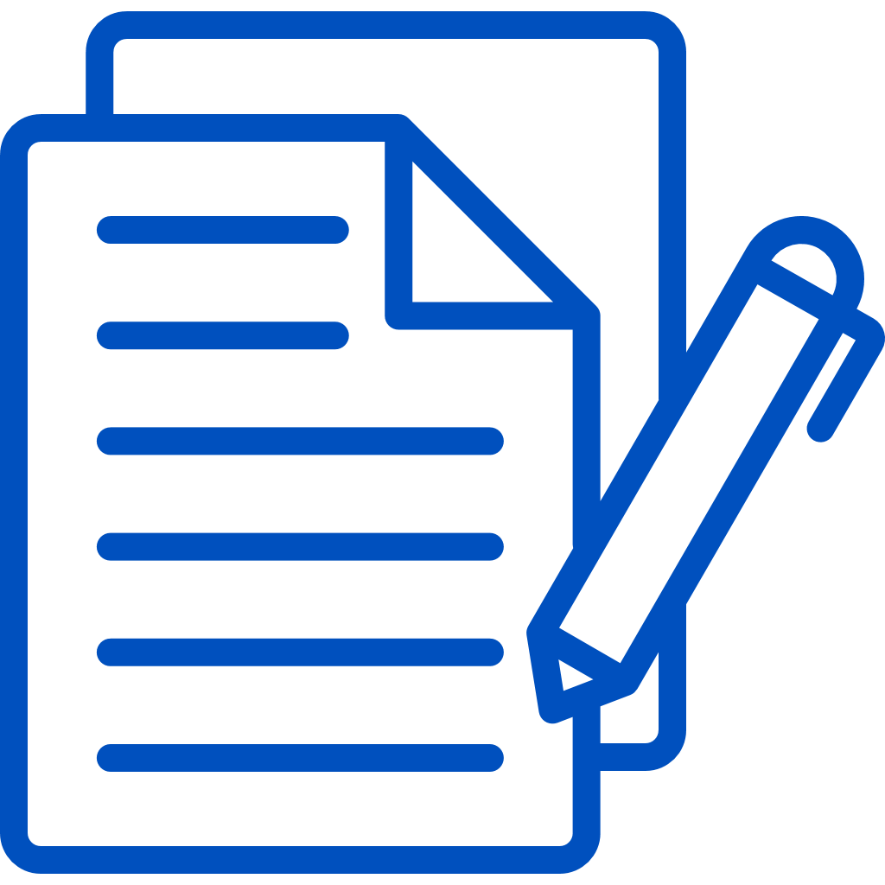

Visor de Evidencias QA
Controles Superiores
-
Ver historial de capturas:
Permite visualizar el registro de imágenes tomadas previamente.
-
Navegación:
Permite desplazarte entre capturas realizadas
- Anterior: Presiona ← (Flecha Izquierda).
- Siguiente: Presiona → (Flecha Derecha).
- Salto al Final: Presiona ↑ (Flecha Arriba) para ver la última captura realizada.
- Salto al Inicio: Presiona ↓ (Flecha Abajo) para volver a la primera captura.
-

Acciones de Imagen:
- Editar: Activa herramientas para marcar o resaltar áreas en la imagen.
- Copiar: Envía la imagen actual directamente al portapapeles.
- Descargar: Confirma y almacena la evidencia actual.
- Borrar: Elimina la captura seleccionada de la sesión.
Atajos de Teclado
- Ctrl + Shift + V : Abrir el visor de evidencias.
- Ctrl + Shift + S : Capturar toda la página (Full Page).
- Ctrl + Shift + W : Capturar área visible (Visible Area).
- Esc : Salir de la vista de zoom o cerrar visor.
- Ctrl + C : Copiar la evidencia rápidamente.
Estado Inicial: Si no se han realizado capturas, el visor mostrará el mensaje "Sin evidencias".
Inicie una captura de pantalla completa o selección para comenzar.